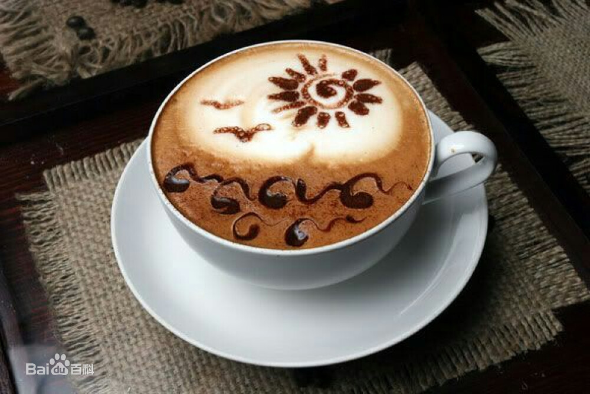

摩卡咖啡
摩卡是一种起源于澳大利亚的，带有细奶泡的拿铁咖啡，并且在上个世纪八十年代 就已经出现了，它是一款介于拿铁与卡布间的新饮品，摩卡和拿铁相比，奶泡比例较低，咖啡香气较浓，相较于卡布，澳 瑞白的奶泡又不若卡布厚实，其特色是奶泡的空气含量低，倒入杯中时表面奶泡型状扁平；其次、因而得名摩卡，澳瑞白 和拿铁味道很相似，但摩卡的苦味重于奶味，比拿铁略苦，带有回味。
|
|
Welcom to KF！ |

摩卡咖啡摩卡是一种起源于澳大利亚的，带有细奶泡的拿铁咖啡，并且在上个世纪八十年代 就已经出现了，它是一款介于拿铁与卡布间的新饮品，摩卡和拿铁相比，奶泡比例较低，咖啡香气较浓，相较于卡布，澳 瑞白的奶泡又不若卡布厚实，其特色是奶泡的空气含量低，倒入杯中时表面奶泡型状扁平；其次、因而得名摩卡，澳瑞白 和拿铁味道很相似，但摩卡的苦味重于奶味，比拿铁略苦，带有回味。 |
|
| 版权所有©杨真锦 | |